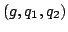
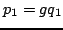
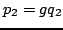

Usage
heuristicGcd()
Signature
heuristicGcd: (P, P) (Partial P, P, P)
| Parameter | Type | Description |
|---|---|---|
| P | Polynomials |
Returns
Returns  such that,  and .
Remarks
This heuristic can fail in theory, in which case (failed,